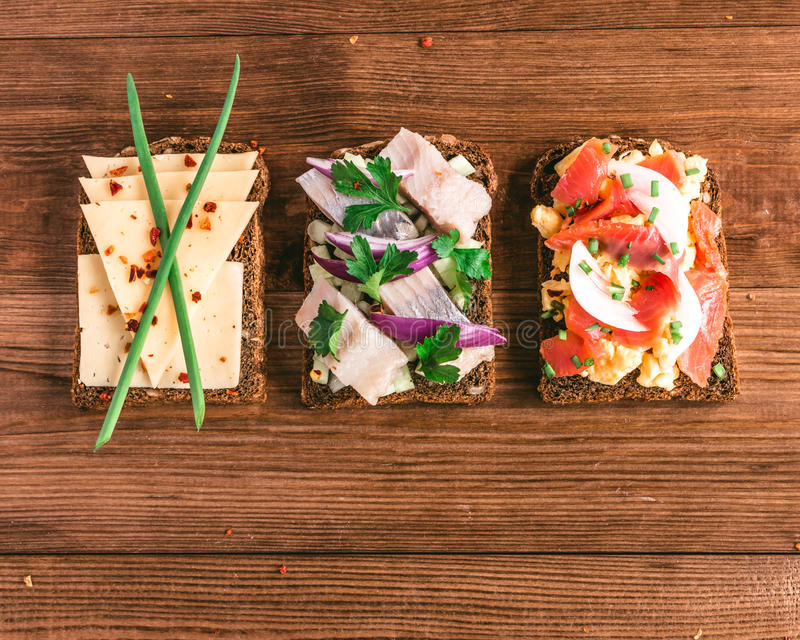
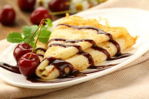
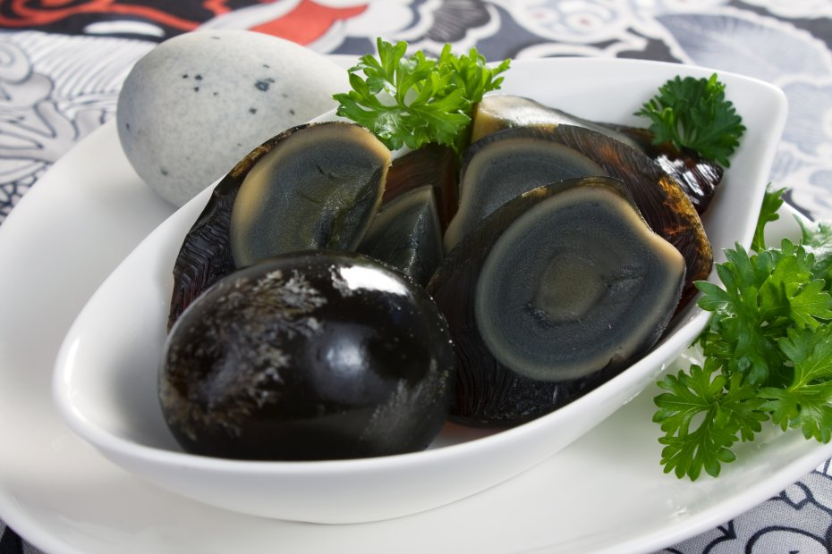

Viajes Por El Mundo
Londres
Sunday roast
Como en todos los países en Inglaterra también la comida del domingo es una ocasión especial. La comida tipica de Londres los domingos es justamente el Sunday Roast, el asado de los domingos. Se prepara con carne de cerdo, ternera, cordero o pollo, segñun los gustos, acompañada de varias verduras, normalmente patatas, que nunca faltan en las mesas de Inglaterra, zanahorias, repollo y coles de Bruselas. Además, este se suele servir con el típico Yorkshire pudding.
Asado de cerdo a la salsa de patatas
Es bastante típico el asado de cerdo con salsa de patatas. La carne conserva la piel para conseguir un plato de textura y sabor parecido al cochinillo segoviano. Una primera capa crujiente que cubre una carne realmente tierna y jugosa.

Fish & Chips
Es el mítico pescado empanado con patatas fritas. Normalmente suele tomarse de bacalao rebozado, pero también se puede hacer con otro tipo de pescado. En los restaurantes suelen acompañar el plato con zanahoias y guisantes.
Pavo relleno de salvia y cebolla
Es el plato estrella de la navidad en Inglaterra. El relleno de salvia y cebolla impregna toda la carne de su sabor. Se acompaña de una salsa con miga de pan aromatizada con clavo.
Stew
Es un estofado de carne de ternera o cerdo con zanahorias, chirivías y navos. Todos sazonado a gusto del cocinero. Las chirivías con unas raíces usadas como horalizas similares a las zanahorias que poco a poco se van se van haciendo más comunes en la cocina española.
Jacket Potatoes
Un plato muy típico que saborear en los pubs de Londres: se trata de una patata hervida, abierta y rellena con diferentes tipos de rellenos. Según tus gustos puedes elegir entre atún y mayonesa, queso y panceta, queso brie y cebolla roja, etc…
Pastelería
Crumble
origen anglosajón, formado por una capa de fruta fresca cubierta por una mezcla de harina, azúcar y mantequilla, que se cuece en el horno. El calor reblandece la fruta y endurece la cubierta o crumble, que no es más (ni menos) que una masa de galleta en migas.
En el Reino Unido, el crumble está asociado a las estaciones de otoño e invierno, a días fríos, lluviosos y desapacibles. Como más se disfruta es recién hecho, caliente o templado, lo que no quita para que muchos lo prefieran frío.
Apple Pie
La diferencia con la tarta de manzana es que aquí la fruta se encuentra bajo la masa. Así la manzana se cocina en su propio jugo bajo esa rejilla de pasta.
Sticky Toffee
un bizcocho muy suave que se suele acompañar con crema de vainilla o bien con una bola de helado, siempre regado con su salsa de tofe caliente. Se trata de un plato muy sencillo de preparar, siendo la principal dificultad la precisión en las medida, como suele ocurrir en la repostería.
El origen de esta receta se remonta al año 1970, cuando el cocinero Francis Coulson se atribuyó la creación de la receta, pero posteriores estudios llevaron a pensar que quizá había tomado la receta de otro lugar.
Quizá no se trate de un postre tan típico como los famosos brownies, pero desde luego que no tiene nada que envidiarles.
Holanda
Erwtensoep
A pesar de recibir el nombre de sopa se encuentra mucho más cercana a una crema de verduras en cuanto a su textura y consistencia. Es un perfecto plato para combatir el duro invierno holandés. Es un plato elaborado a base de guisantes y casi siempre también con patatas. Es posible al mismo tiempo añadir otros ingredientes de la huerta. Es servida con una guarnición de salchichas o carne picada, así como con algunas especias. También es habitual acompañarla con una gruesa rebanada de pan de centeno que se unta con queso o mantequilla, o se acompaña a su vez con una fina loncha de bacon.
Rusttafel
Su origen se encuentra en las colonias que Los Países Bajos tenían en Indonesia. Pero el paso del tiempo ha hecho que se incorpore a la gastronomía habitual del país. Su preparación en tierras de los tulipanes ya dista bastante de la que se puede degustar en Indonesia. En un plato cocinado a base de arroz, pero que se acompaña de multitud de aditivos. Es muy típico comerlo con verduras y hortalizas cocinadas, distintas carnes (pollo, ternera estofada, cordero) pescado tostado, plátano; así como con distintas salsas o leche de coco.

Hutspot
Otro de los platos que nos permitirá afrontar el invierno en Los Países Bajos. Consiste en una copiosa ración de carne estofada servida con puré de patatas y zanahoria además de una guarnición de distintas verduras como coliflor o repollo. Es un plato de tradición nacional, puesto que es la comida habitual cada 3 de octubre para conmemorar la victoria sobre los españoles en la guerra de los 80 años.
Kroketten
Versión holandesa de las universales croquetas de la abuela. Pero en caso son un tamaño bastante importante. Suelen elaborarse con carne de vacuno picada, pescado o incluso gambas. Es un plato tan típico que incluso en algunas archiconocidas cadenas de comida rápida se sirven menús kroketten.
Bitterballen
Son las hermanas pequeñas del kroketten. En cuanto a tamaño son más parecidas a las croquetas que todos conocemos. Es un típico aperitivo servido con algo de mostaza para potenciar su sabor. Son pequeñas bolitas de carne de vacuno especiada y rebozadas. La mejor idea para acompañar una buena cerveza.
Quesos
Uno de los productos típicos por antonomasia en Los Países Bajos, dado que los neerlandeses son unos grandes productores de queso. Los más conocidos son el Gouda, el Edam y el Alkmaar. Es muy habitual caminar por Ámsterdam y encontrar tiendas dedicadas exclusivamente a este producto. También es habitual encontrar mercados dedicados al queso holandés. Para más información no te pierdas nuestro post sobre "Tiendas de Quesos en Amsterdam".
Pastelería
Poffertjes
Es el postre neerlandés más conocido. Son pequeños creps parecidos a los franceses acompañados única y exclusivamente por azúcar y mantequilla. La masa se prepara con una mezcla al 50% de harina de trigo y harina de sarraceno, y si bien es fácil su preparación es necesario prepararla en una sartén especial.

Stroopwafels
El dulce tradicional de las clases más bajas según cuenta su leyenda, y es que un panadero ideó estas dos galletas con forma de gofre y unidas por caramelo fundido con los sobrantes de la panadería. Durante muchas generaciones era el dulce del pueblo hasta que la nobleza y burguesía empezaron a tomarlo de acompañamiento del té.
Tompolice o Milhojas de Napoleón
Es una especie de sándwich de galleta rellena de una abundante capa de crema con una cobertura de color rosado.
Applegebak
Versión neerlandesa de la tarta de manzana. Jugosa masa con bordes muy crujientes y rellena con gruesos trozos de manzana fresca.
Dinamarca
Smorrebrod
Nada mejor que comenzar por la comida más emblemática del país danés. Consiste en una rebanada de pan negro, untados generosamente con mantequilla y lonjas de pescado, queso y carne, pepino, huevo duro, cebolla y verduras. Aunque puede parecer un simple sándwich, se utilizan cubiertos para comerlos y no se le coloca mas pan encima. Sirve como almuerzo
Rebufare
Hamburguesas típicas danesas.
Gravad laks
Salmón marinado con eneldo, que se sirve acompañado de mostaza dulce.

Sild
Es arenque, uno de los ingredientes más comunes de la cocina danesa. Se puede comer marinado, guisado, ahumado…
Koldt bord
También es conocido como bufé y consiste en la preparación de diferentes tipos de pescados, carnes, platos calientes, quesos y postres.
Frikadeller
De seguro ya has comido Frikadeller sólo que las conoces con su otro nombre, albóndigas. Se preparan con carne picada, huevos, leche, cebolla, pimienta y sal. Se fríen y se sirven en forma de bolitas de carne, acompañadas con unas deliciosas papas fritas o verduras cocidas. Además, se añade alguna salsa para más sabor.
Pastelería
Karamelrand med is
Es un flan de huevo muy parecido al clásico flan español. Está delicioso.

Jule risengrod
Una especie de arroz con leche bañado con licor de cerezas (kirsch).

Citronfromatge
Un postre muy habitual en las mesas navideñas, a base de nata y limón.
París
Confit de pato
Se prepara en todo el territorio francés. Esta delicia culinaria es preparada en base a piernas de pato, las cuales se deben salar para después escalfar, dando como resultado un plato de sabor concentrado y una carne de textura fibrosa.
Coq au vin
El Coq au vin es una especie de estofado de pollo con verduras y vino. Suele tener verduras de tipo nabo o cebolla y las versiones mejoradas incluso pueden incluir alguna seta, tradicionalmente la Morchella.
Moules frites
Los moules frites son mejillones cocidos al vapor y posteriormente servidos con patatas fritas. Se acompañan tradicionalmente con cerveza. Aunque es un plato simple en origen, las variaciones pueden ser muy sofisticadas.
Pot au feu
El Pot au feu consiste en carne de buey cocido en un caldo de hortalizas con verduras y especias. Pertenece a la extensa familia de los cocidos franceses, platos ancestrales de origen rural y humilde por lo que las variantes regionales y nacionales son numerosas dependiendo de los ingredientes locales.
.jpg)
Escargost
Los escargots son caracoles sancochados y aderezados con ajo, dentro de su caparazón. Por lo general se sirven como platillos de entrada y es un plato gastronómico de fiesta.
Pastelería
Croissants
Los clásicos cruasanes, o crossaint en francés son mantecosos y crujientes. Se sirven con dulce o simples para el desayuno. Están en todas partes y es una opción barata para una comida simple y rápida.
Crepes
La especialidad dulce local por excelencia, son: las crepes, discos de harina de trigo a los que se les puede incluir chocolate derretido crema, helado, o fruta encima para después enrollarlo al gusto. También hay versiones saladas.
Pain au Chocolat
De una masa similar al croissant, París tiene otra delicia conocida como Pain au Chocolat, o pan de chocolate. En España se conoce como Napolitana (a pesar del nombre es una especialidad francesa)
Macarons
Son pequeñas galletas coloridas que se han puesto muy de moda en los últimos años. Se trata de unos pastelitos elaborados con almendras molidas, claras de huevos y azúcar, y están rellenos con ganache.
Hamburgo
Finkenwerder Scholle
Plato compuesto por el pescado llamado solla, cocida al horno con tocino y camarones.

Bismarckhering
Arenque aliñado en vinagre con mostaza, cebollas y laurel

Himmel und Erde
Combinación de compota de manzana y puré de patatas, acompañado habitualmente con salchichas o tocino.

Hambuger Aalsuppe
La sopa de anguila, antes mencionada, hervida con frutas y preparada con vinagre para obtener un contraste ácido y dulce muy rico.

Steckrübeneintopf
Guiso de cocido a base de nabos, zanahoria y carne de cerdo.

Pastelería
Destacamos dos postres:
Braune Kuchen
Galletas crujientes hechas de harina de trigo, canela y miel.

Rote Grütze
Pasta roja preparada a base de frutos rojos (cereza o frambuesa), que habitualmente se acompaña de dulce de vainilla o helado.

México
Enchiladas
Las enchiladas son similares a los tacos, pero con mucho picante, sin cereales dentro y con abundante queso. Hay quienes las gratinan al horno no solo por el queso que las cubre, sino también por el que hay dentro. Como suele ocurrir con este tipo de comidas, existen diferentes recetas dependiendo de la región.

Fajinas
Las fajitas son uno de los platos más populares y consumidos dentro de la gastronomía Tex-Mex, lo que significa que es popular tanto en México como en el suroeste de Estados Unidos. Este plato consiste en tiras de carne asadas a la parrilla junto con una variedad de verduras, entre las que se suelen encontrar: cebollas, chiles, zanahorias, maíz dulce, etc.
Pozole blanco
En realidad, del este pozole blanco también existen versiones rojas (como la que se hace en Jalisco) y la versión verde (habitual en la Costa de Michoacán). Es una sopa hecha a base de un tipo concreto de maíz conocido como cacahuazintle, a la que se le añade carne de cerdo o pollo como ingrediente complementario.

Quesadillas
Las quesadillas incluyen también tortillas de maíz o de trigo y su ingrediente principal es el queso, de ahí su nombre. Se elaboran a la plancha o a la parrilla y se añade queso hasta que éste queda fundido. Si solo se emplea una tortilla, entonces se sirven plegadas.
Si se coloca una tortilla encima de la otra (de manera que el queso y el resto de ingredientes quedan de relleno), entonces se las denomina sincronizadas. Cuando se incluyen otros ingredientes aparte del queso, suelen llamarse simplemente dobladillas.

Tamales yucatecos
Existen cuatro variedades de tamales yucatecos. Son similares a las hallacas venezolanas, pero, a diferencia de éstas, se cocinan al vapor o al horno.
El tipo de tamal más conocido es el tamal sin hoja, conocido bajo el nombre de tzacol, término de la lengua maya que significa Dios del Cielo y se aplica a esta comida porque se dice que es un manjar de los dioses del cielo.
Se preparan con guiso de pollo y cerdo en achiote, que se introducen dentro de una masa de maíz. La forma más tradicional de cocinarlos es en hornos hechos bajo tierra. Además, existen dos variedades: por un lado, los horneados y, por otro lado, el tamal colado.

Pastelería
Ate de mamey
El llamado “ate de mamey” son, en realidad, trozos del fruto del árbol mamey confitados. Para su preparación se necesitan mameys maduros, almendras picadas, azúcar, canela y aceite vegetal. Se tritura todo y se hace una mezcla homogénea hasta que se forma un almíbar ligero.

Besos de coco
Los besos de coco son un postre típico mexicano que también se conoce con el nombre de besitos de coco. Se elabora con leche condensada, extracto de vainilla y coco rallado. Todos estos ingredientes se deben mezclar hasta formar una masa homogénea que, finalmente, se horneará.
Dulce de alfeñique
Se trata de una figurilla, habitualmente con forma de calavera, de caramelo o confitura y que se prepara a base de azúcar pura de la caña. Se prepara desde los tiempos coloniales en gran parte de Latinoamérica. La forma de calavera se debe a que es un dulce que suele tomarse el 2 de noviembre, es decir, el Día de los Muertos.
También se conocen con el nombre de calaveritas de azúcar. Su elaboración requiere del empleo de varias técnicas artísticas. Además, durante el Día de los Muertos, se celebra la famosa Feria del Alfeñique y del Dulce Regional, que se lleva a cabo desde 1989 y en ella se ven infinidad de puestos callejeros en los que se vende este dulce. En el siguiente vídeo se puede ver qué nos encontraremos si visitamos la Feria del Alfeñique en México:
Pastel de zapote negro
El zapote negro es una fruta procedente del árbol del mismo nombre y cuyo sabor recuerda en gran medida al del chocolate, por lo que se dice que este pastel podría ser el sustituto del pastel de chocolate, y mucho más sano.
Bebidas
Tequila
El tequila es una bebida alcohólica originaria del municipio de Tequila, en el estado de Jalisco. Su elaboración consiste en la fermentación y el destilado del juego del agave azul (agave tequilana). Esta bebida se considera la más conocida internacionalmente y representativa del país.
Es tradición beberlo con sal y limón, debido a que antiguamente en las fronteras de México se servía tequila barato, el cual no se elaboraba con agave azul sino con alcoholes agrícolas que le daban un sabor desagradable. La sal y el limón se añadían para rebajar este sabor.
Mezcal
El mezcal es otra bebida alcohólica que se elabora a base de los azúcares extraídos de las cabeza o piñas maduras de varios tipos de agave. Es una bebida incolora o ligeramente amarillenta.
Pulque
El pulque es una bebida alcohólica fermentada es tradicional de México y de origen prehispánico. Se prepara a partir de la fermentación del mucílago, popularmente conocido con el nombre de aguamiel, el agave o el maguey pulquero. Aunque se consume en todo el país, es especialmente popular en Guanajuato, Guerrero, Michoacán, Oaxaca, Puebla, Hidalgo, Veracruz y San Luis Potosí, entre otros.
Pekín
Pato pekinés
El pato pekinés es el plato más conocido de la cocina de Pekín. También se conoce como pato asado o pato laqueado. El pato se hace marinado y se asa al horno para que la piel quede crujiente y la carne tierna. Se sirve cortado en rodajas junto con algunas verduras y salsa.
Dim Sum o Dumplings
Las Dim Sum, también conocidas como Dumplings, son unas empanadillas cocinadas al vapor que suelen incluirse en cualquier carta de restaurante en Pekín. Las empanadillas normalmente se rellenan de carne, de verduras o todo mezclado aunque hay muchas combinaciones. Es un plato muy popular en China -y en otros países- porque el sabor es delicioso y es muy barato.
Noodles
Los Noodles es un manjar muy típico de la comida china y que podrás degustar en todos los restaurantes de Pekín. La base del plato son los fideos - normalmente de pasta de arroz o de huevo- y por norma general van acompañados de verduras hervidas.
Arroz
El arroz es el ingrediente básico de la dieta china. En Pekín lo sirven de mil maneras diferentes aunque una de las combinaciones más comunes es con verduras. Otras modalidades son el arroz frito, hervido o acompañado con carne.
Sopa Agripicante
En China el picante es una de las sensaciones culinarias preferidas por la población y en Pekín hay muchos platos que tienen el toque. Uno de los más comunes es la Sopa Agripicante, un caldo elaborado con carne, brotes de bambú, guindilla, tofu y sangre de cerdo.
Huevo centenario
El huevo centenarios es, seguramente, uno de los platos más curiosos de la gastronomía china. Consiste en un huevo de pato, pollo o codorniz que se preserva en cal viva, arcilla y cenizas durante varias semanas o meses hasta que se pudre, literalmente. Este manjar está considerado como una delicia china pero… no suele tener a muchos seguidores occidentales.
© Página realizada por C.M.L. en 2018